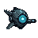
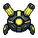
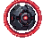
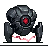
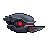
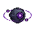
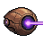
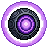

방향 전환: "단일 본체 + 스왑 모듈" 폐기 → 카테고리별로 생긴 게 다른 무기-드론 4종. 드론 본체 자체가 무기에 맞게 디자인됨. 무기는 한 번에 하나 장착 → "내 장착 무기 = 내 동반 드론".

전방 통합 배럴/에미터가 본체에 박힌 건-드론. 곁에서 따라다니며 전방 투사체 발사. 가장 기본 거동.

공중에 떠 따라다니는 드론(터렛 X) + 상향 옐로 런처 2기. 목적 = 바닥에 있을 때 천장에서 떨어지는 장애물 요격. 원거리(전방 정밀)와 차별 = 상방 + 산탄/광역.

코어 둘레가 회전 에너지 톱날 링. dash하며 슬라이스. 드론 자체가 칼날 — 팔·분리 칼 없음. 가장 "근접 무기" 즉독 + juicy.

칼날 0. 적 근접 시 전기 아크 방전(번개). "칼이 이상하다" 근본 회피. 현 시안은 다소 크리처스러움(정교화 시 드론化).

슬릭 저프로파일 + 각진 단검형 선체. 적을 들이받는 dash(돌진 후 복귀). 날=본체 일부. 빠르고 공격적.

주위를 도는 퍼플 오브 자동 요격 = 사방 패시브 방어. 상하좌우 벽타기 + 다방향 위협에 딱. (현 시안 오브 작음 → 정교화 시 강조)

지속 퍼플 관통 레이저(채널). 드라마틱한 "궁극기" 감·정밀 조준. ⚠ 현 시안 본체 갈색조 = DNA 이탈(선택 시 다크로 재조정).

충전 후 방사형 충격파 = 주변 광역 클리어. 패닉 버튼/위기 탈출. 다크+동심원 = DNA 정합·시각 임팩트 강.
확정 시 → 4종 공유 DNA로 정교화(채택+대안) + idle hover + 인게임 합성/모션 → unity 핸드오프(독립GO 스프링추종 + 카테고리별 발사 거동/VFX) → 기기 판정.